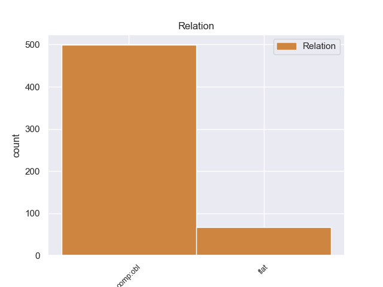
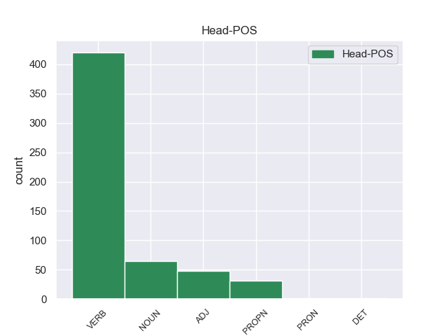
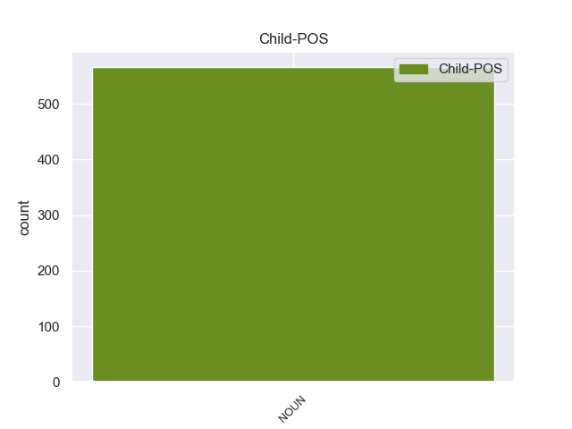

Distribution of features within this leaf



Agreement Rules sorted by frequency.
- When the dependent token is the oblique complements(comp:obl) of the head token, and the dependent token is NOUN.
1 Fyri _ _ _ _ 0 _ _ _
2 at _ _ _ _ 0 _ _ _
3 uppfylla _ _ _ _ 0 _ _ _
4 Hoyvíkssáttmálan _ _ _ _ 0 _ _ _
5 varð _ _ _ _ 0 _ _ _
6 tryggingarlógini tryggingarlógin NOUN _ Case=Dat|Gender=Fem|Number=Sing 13 comp:obl _ _
7 § _ _ _ _ 0 _ _ _
8 9 _ _ _ _ 0 _ _ _
9 , _ _ _ _ 0 _ _ _
10 stk _ _ _ _ 0 _ _ _
11 . _ _ _ _ 0 _ _ _
12 2 _ _ _ _ 0 _ _ _
13 broytt broytt ADJ _ Definite=Ind|Number=Sing|VerbForm=Part 0 _ _ _
14 við _ _ _ _ 0 _ _ _
15 § _ _ _ _ 0 _ _ _
16 4 _ _ _ _ 0 _ _ _
17 í _ _ _ _ 0 _ _ _
18 løgtingslóg _ _ _ _ 0 _ _ _
19 nr _ _ _ _ 0 _ _ _
20 . _ _ _ _ 0 _ _ _
21 55 _ _ _ _ 0 _ _ _
22 frá _ _ _ _ 0 _ _ _
23 16 _ _ _ _ 0 _ _ _
24 . _ _ _ _ 0 _ _ _
25 mai _ _ _ _ 0 _ _ _
26 2006 _ _ _ _ 0 _ _ _
27 , _ _ _ _ 0 _ _ _
28 so _ _ _ _ 0 _ _ _
29 at _ _ _ _ 0 _ _ _
30 parta- _ _ _ _ 0 _ _ _
31 ella _ _ _ _ 0 _ _ _
32 ábyrgdarpeningur _ _ _ _ 0 _ _ _
33 framyvir _ _ _ _ 0 _ _ _
34 , _ _ _ _ 0 _ _ _
35 umframt _ _ _ _ 0 _ _ _
36 at _ _ _ _ 0 _ _ _
37 verða _ _ _ _ 0 _ _ _
38 føroyskur _ _ _ _ 0 _ _ _
39 eisini _ _ _ _ 0 _ _ _
40 kann _ _ _ _ 0 _ _ _
41 verða _ _ _ _ 0 _ _ _
42 íslendskur _ _ _ _ 0 _ _ _
43 . _ _ _ _ 0 _ _ _
1 Tað _ _ _ _ 0 _ _ _
2 kemur _ _ _ _ 0 _ _ _
3 tær _ _ _ _ 0 _ _ _
4 ikki _ _ _ _ 0 _ _ _
5 í _ _ _ _ 0 _ _ _
6 huga _ _ _ _ 0 _ _ _
7 í _ _ _ _ 0 _ _ _
8 lítla _ _ _ _ 0 _ _ _
9 barnahøvdinum _ _ _ _ 0 _ _ _
10 í _ _ _ _ 0 _ _ _
11 hesi hesis NOUN _ Case=Acc|Number=Sing 0 _ _ _
12 barnagarðsstovu barnagarðsstovus NOUN _ Case=Acc|Number=Sing 11 flat _ _
13 . _ _ _ _ 0 _ _ _
Disagree Examples:
1 Á _ _ _ _ 0 _ _ _
2 tingfundi _ _ _ _ 0 _ _ _
3 26 _ _ _ _ 0 _ _ _
4 . _ _ _ _ 0 _ _ _
5 oktober _ _ _ _ 0 _ _ _
6 2012 _ _ _ _ 0 _ _ _
7 svaraði svaran VERB _ Mood=Ind|Number=Sing|Person=3|Tense=Past|VerbForm=Fin|Voice=Act 0 _ _ _
8 Johan _ _ _ _ 0 _ _ _
9 Dahl _ _ _ _ 0 _ _ _
10 , _ _ _ _ 0 _ _ _
11 landsstýrismaður _ _ _ _ 0 _ _ _
12 , _ _ _ _ 0 _ _ _
13 fyrispurninginum fyrispurninginum NOUN _ Case=Dat|Gender=Masc|Number=Plur 7 comp:obl _ _
14 soleiðis _ _ _ _ 0 _ _ _
15 : _ _ _ _ 0 _ _ _
16 Breið _ _ _ _ 0 _ _ _
17 semja _ _ _ _ 0 _ _ _
18 tykist _ _ _ _ 0 _ _ _
19 vera _ _ _ _ 0 _ _ _
20 í _ _ _ _ 0 _ _ _
21 løgtinginum _ _ _ _ 0 _ _ _
22 um _ _ _ _ 0 _ _ _
23 , _ _ _ _ 0 _ _ _
24 at _ _ _ _ 0 _ _ _
25 Landsstýrið _ _ _ _ 0 _ _ _
26 hevur _ _ _ _ 0 _ _ _
27 skyldu _ _ _ _ 0 _ _ _
28 at _ _ _ _ 0 _ _ _
29 tryggja _ _ _ _ 0 _ _ _
30 hóskandi _ _ _ _ 0 _ _ _
31 ferðasamband _ _ _ _ 0 _ _ _
32 kring _ _ _ _ 0 _ _ _
33 alt _ _ _ _ 0 _ _ _
34 landið _ _ _ _ 0 _ _ _
35 . _ _ _ _ 0 _ _ _
1 At _ _ _ _ 0 _ _ _
2 lesa _ _ _ _ 0 _ _ _
3 krevur _ _ _ _ 0 _ _ _
4 nakað _ _ _ _ 0 _ _ _
5 av _ _ _ _ 0 _ _ _
6 lesaranum _ _ _ _ 0 _ _ _
7 , _ _ _ _ 0 _ _ _
8 og _ _ _ _ 0 _ _ _
9 tí _ _ _ _ 0 _ _ _
10 er _ _ _ _ 0 _ _ _
11 tað _ _ _ _ 0 _ _ _
12 eisini _ _ _ _ 0 _ _ _
13 týdningarmikið _ _ _ _ 0 _ _ _
14 , _ _ _ _ 0 _ _ _
15 at _ _ _ _ 0 _ _ _
16 foreldrini _ _ _ _ 0 _ _ _
17 eggja eggjan VERB _ Mood=Ind|Number=Sing|Person=3|Tense=Pres|VerbForm=Fin 0 _ _ _
18 børnunum _ NOUN _ Case=Dat|Gender=Masc|Number=Plur 17 comp:obl _ _
19 til _ _ _ _ 0 _ _ _
20 at _ _ _ _ 0 _ _ _
21 lesa _ _ _ _ 0 _ _ _
22 , _ _ _ _ 0 _ _ _
23 hóast _ _ _ _ 0 _ _ _
24 tey _ _ _ _ 0 _ _ _
25 muta _ _ _ _ 0 _ _ _
26 ímóti _ _ _ _ 0 _ _ _
27 . _ _ _ _ 0 _ _ _
1 Bygdaráðið _ _ _ _ 0 _ _ _
2 ( _ _ _ _ 0 _ _ _
3 býráðið _ _ _ _ 0 _ _ _
4 ) _ _ _ _ 0 _ _ _
5 kann kanat VERB _ Mood=Ind|Number=Sing|Person=3|Tense=Pres|VerbForm=Fin|Voice=Act 0 _ _ _
6 siga _ _ _ _ 0 _ _ _
7 garðaskoðarunum garðaskoðaru NOUN _ Case=Dat|Gender=Masc|Number=Plur 5 comp:obl _ _
8 upp _ _ _ _ 0 _ _ _
9 ; _ _ _ _ 0 _ _ _
10 tó _ _ _ _ 0 _ _ _
11 er _ _ _ _ 0 _ _ _
12 loyvt _ _ _ _ 0 _ _ _
13 teimum _ _ _ _ 0 _ _ _
14 , _ _ _ _ 0 _ _ _
15 sum _ _ _ _ 0 _ _ _
16 eru _ _ _ _ 0 _ _ _
17 uppsagdir _ _ _ _ 0 _ _ _
18 ímóti _ _ _ _ 0 _ _ _
19 sínum _ _ _ _ 0 _ _ _
20 vilja _ _ _ _ 0 _ _ _
21 , _ _ _ _ 0 _ _ _
22 at _ _ _ _ 0 _ _ _
23 leggja _ _ _ _ 0 _ _ _
24 málið _ _ _ _ 0 _ _ _
25 fram _ _ _ _ 0 _ _ _
26 á _ _ _ _ 0 _ _ _
27 løgtinginum _ _ _ _ 0 _ _ _
28 . _ _ _ _ 0 _ _ _
1 Onkur _ _ _ _ 0 _ _ _
2 helt _ _ _ _ 0 _ _ _
3 , _ _ _ _ 0 _ _ _
4 at _ _ _ _ 0 _ _ _
5 vert _ _ _ _ 0 _ _ _
6 hevði _ _ _ _ 0 _ _ _
7 verið _ _ _ _ 0 _ _ _
8 at _ _ _ _ 0 _ _ _
9 roynt _ _ _ _ 0 _ _ _
10 eina _ _ _ _ 0 _ _ _
11 stóra _ _ _ _ 0 _ _ _
12 kapping _ _ _ _ 0 _ _ _
13 fyri fyri NOUN _ Mood=Ind|Number=Sing|Person=3|Tense=Pres|VerbForm=Fin|Voice=Act 0 _ _ _
14 øllum _ _ _ _ 0 _ _ _
15 rørsluáhugaðum rørsluáhugaðu NOUN _ Case=Dat|Gender=Masc|Number=Plur 13 comp:obl _ _
16 . _ _ _ _ 0 _ _ _
1 Kommunan _ _ _ _ 0 _ _ _
2 fegnast _ _ _ _ 0 _ _ _
3 um _ _ _ _ 0 _ _ _
4 úrslitið _ _ _ _ 0 _ _ _
5 av _ _ _ _ 0 _ _ _
6 kvøldskúlaundirvísingini _ _ _ _ 0 _ _ _
7 í _ _ _ _ 0 _ _ _
8 talvi _ _ _ _ 0 _ _ _
9 , _ _ _ _ 0 _ _ _
10 og _ _ _ _ 0 _ _ _
11 vit _ _ _ _ 0 _ _ _
12 ynskja ynskjan VERB _ Mood=Ind|Number=Sing|Person=1|Tense=Pres|VerbForm=Fin|Voice=Act 0 _ _ _
13 gentunum gen NOUN _ Case=Dat|Gender=Fem|Number=Plur 12 comp:obl _ _
14 góðan _ _ _ _ 0 _ _ _
15 byr _ _ _ _ 0 _ _ _
16 í _ _ _ _ 0 _ _ _
17 Íslandi _ _ _ _ 0 _ _ _
18 í _ _ _ _ 0 _ _ _
19 næsta _ _ _ _ 0 _ _ _
20 mánaða _ _ _ _ 0 _ _ _
21 . _ _ _ _ 0 _ _ _